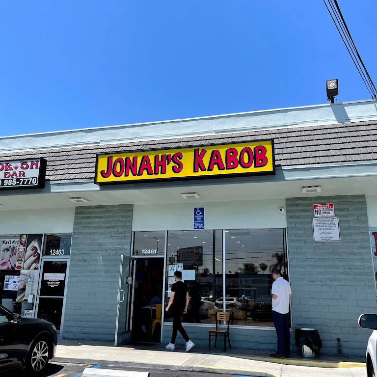

This restaurant was created by the Antonyan family. However, the brains behind the whole operation is none other than Nick Antonyan, A.K.A. Jonah from Youtubes Vlog Squad! With Jonah's rise to fame and love for Mediterranean food he and his family achieved their goal of owning their own restaurant.
